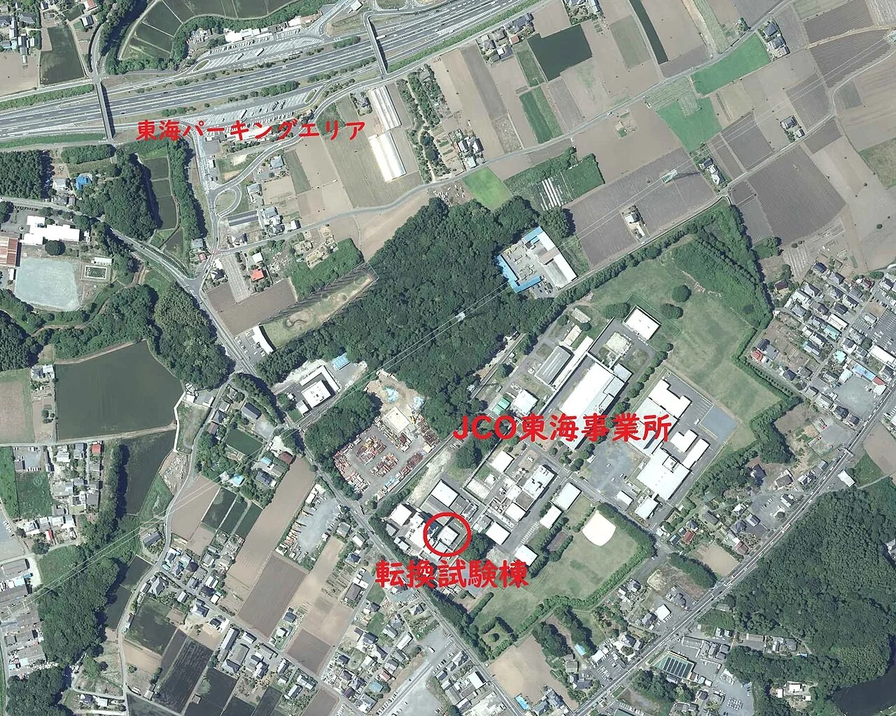
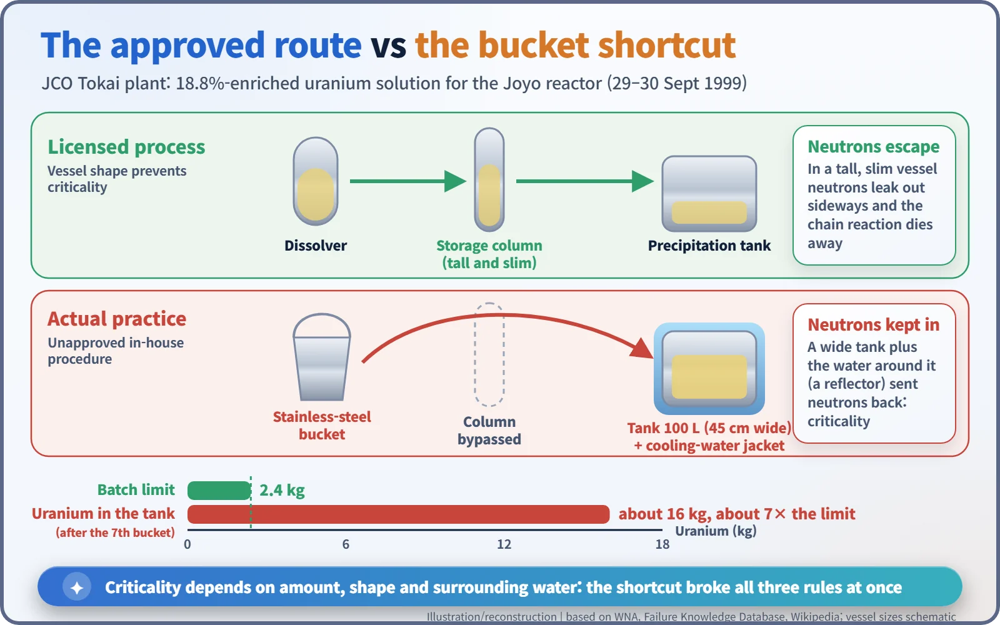

Nuclear History · 263
Uranium by the Bucket — The JCO Criticality Accident at Tokai-mura (1999)
No reactor and no explosion: a shortcut with a steel bucket put seven times the allowed uranium into the wrong tank, and the chain reaction ran for about 20 hours.
On 30 September 1999, workers at the JCO nuclear fuel plant in Tokai-mura, Japan, carried enriched uranium solution by hand in a stainless-steel bucket and poured about 16 kg of uranium, roughly seven times the limit, into a tank never designed to hold that much. The solution went critical and stayed that way, on and off, for about 20 hours. There was no reactor and no explosion, but two of the three workers died.
An ordinary bucket
A stainless-steel bucket with a wire handle: the kind of thing you might find in any kitchen cupboard or janitor's closet. In the autumn of 1999, at a factory in Tokai-mura, Ibaraki Prefecture, an ordinary bucket like this ended up at the centre of Japan's first criticality accident. There was no reactor and no explosion, yet two men died. How could that happen?
Not a power plant, but a fuel factory
The accident took place at the Tokai plant of JCO, a nuclear fuel company owned by Sumitomo Metal Mining. The plant, which started operating in 1988, normally processed low-enriched uranium (3–5%) for light-water reactors. Now and then, though, a special order came in: a uranyl nitrate solution of uranium enriched to 18.8% for Joyo, Japan's experimental fast reactor. The 1999 batch was the first such job in three years, and there were no formal qualification or training requirements for the people who did it. [1] [3]

The approved route, and the shortcut
The process the government had approved went like this. Uranium was dissolved in a dissolution column, held in a tall, slim storage column, and fed a little at a time into a precipitation tank. The amount of uranium handled in one batch was limited to 2.4 kg. [2]
On the shop floor the approved route was seen as slow and awkward. Around 1995–1996 an internal safety committee accepted the use of steel buckets and an unapproved work manual was written; dissolving uranium in stainless-steel buckets and carrying it by hand became routine. The national regulator inspected the plant only twice a year, and never while it was operating. [1] [3]
On 29 September 1999 the workers poured four batches into the precipitation tank. The next morning they poured three more. After the seventh bucket, the tank held about 16 kg of uranium, roughly seven times the limit. [2] [3]

10:35 a.m., 30 September
At that moment the solution went critical: the chain reaction became self-sustaining. The workers are said to have seen a blue flash, and gamma-radiation alarms went off. Hisashi Ouchi (aged 35) and Masato Shinohara (aged 40), who were working at the tank, and their supervisor Yutaka Yokokawa (aged 54), a little farther away, were hit by an intense burst of neutrons. Their doses are estimated at 16–20, 6–10 and 1–5 gray respectively. All of these are estimates, and the figures differ slightly between sources. [1] [3]
What makes criticality treacherous is that it depends not only on how much fissile material there is, but on its shape and its surroundings. In the tall, slim storage column, neutrons leak out sideways and a chain reaction cannot keep itself going. The wide precipitation tank, by contrast, kept neutrons in, and the cooling-water jacket around it acted like a mirror, bouncing escaping neutrons back into the solution. [1]
Twenty hours, stopped by draining water
The criticality went on intermittently. At 3 p.m. the mayor of Tokai-mura ordered the evacuation of about 161 people from 39 households within 350 metres. At 10:30 p.m. the governor of Ibaraki Prefecture advised about 300,000 people within 10 km to stay indoors. [1] [2]
The way to stop it was, surprisingly, to drain water. In the early hours of 1 October, workers went in for short shifts to open the piping of the cooling jacket. Once the water that had been reflecting neutrons was gone, the criticality stopped at around 6 a.m. At 8:39 a.m. boric acid, which absorbs neutrons, was added to make sure it could not restart. Over roughly 20 hours there had been about 2.5 × 1018 fissions, releasing about 81 megajoules of energy, about half of it in the first few minutes. [1] [2]
![Timeline from 10:00 on 30 September to 10:00 on 1 October 1999 with an orange band of intermittent criticality from about 10:35 to about 06:04, markers for the 15:00 evacuation within 350 metres, the 22:30 stay-indoors advice within 10 kilometres, the draining of the jacket water and boric acid added at 08:39, then a break to 2 October when the evacuation was lifted; below, a schematic of the 350 metre and 10 kilometre zones and cards showing 2.5 times 10 to the 18 fissions, three workers with estimated doses of 16 to 20, 6 to 10 and 1 to 5 gray, two of whom died, and 119 people above 1 millisievert, INES Level 4](../../assets/images/history/263-jco-criticality-accident/fig2-twenty-hours.webp)
The people, and the rules that changed
Hisashi Ouchi died on 21 December 1999, 83 days after the accident. Masato Shinohara died on 27 April 2000. Yutaka Yokokawa was treated for about three months and survived. [3]
For the public, the World Nuclear Association counts 119 people who received more than 1 mSv, with a highest measured dose of 16 mSv. Some sources give a total of 667 people exposed, a figure that counts emergency workers and others on a different basis, so the two numbers should be read side by side. Official investigations concluded that the released radiation caused no harm to the public or the environment. The accident was rated Level 4 on the International Nuclear and Radiological Event Scale (INES). The International Atomic Energy Agency (IAEA) summed up the cause as "human error and serious breaches of safety principles". [1] [3] [5]
In March 2000 JCO lost its operating licence. On 3 March 2003 the Mito District Court gave suspended prison sentences to six employees, including the former plant manager, and fined the company 1 million yen, the first criminal verdict in Japan over a nuclear accident. On 17 December 1999 Japan had already promulgated the Act on Special Measures Concerning Nuclear Emergency Preparedness, setting out in law how the national government would lead the response to a nuclear disaster. [3] [4]
Between 1945 and 1999, about 60 criticality accidents were reported worldwide, and some twenty of them happened in process facilities like this one. The JCO plant had been designed to prevent criticality through the shape of its vessels. But a design only works if people follow it, and a bucket made that easy to forget. [6]